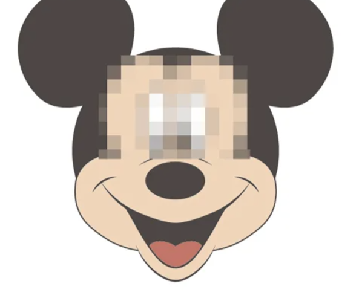
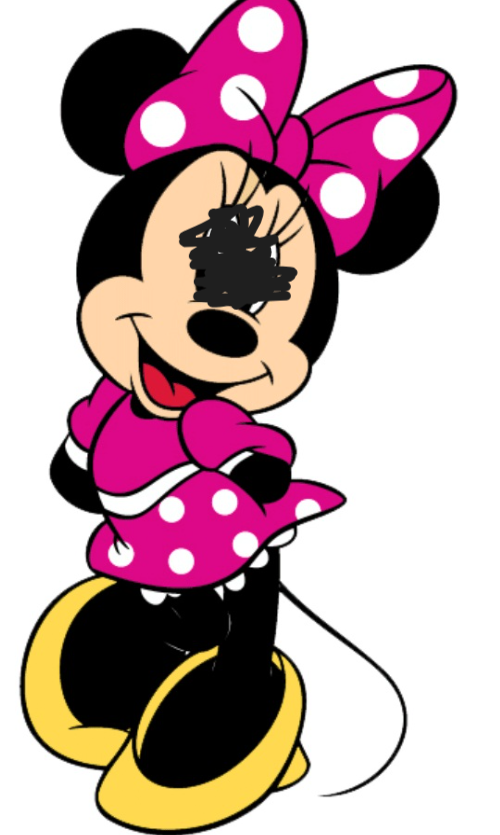
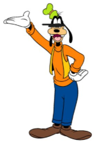
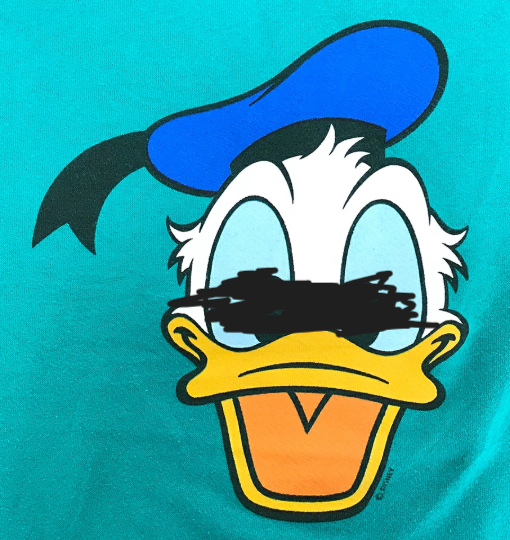
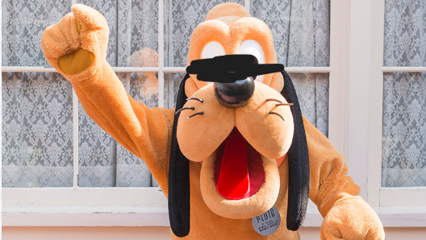
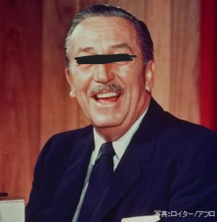

はじめに
ご訪問ありがとうございます。
このページは世界のディズニーキャラクターを紹介するホームページです。可愛い写真を沢山掲載していますので、楽しんでいってくださいね。
※掲載している写真の無断転用・転載はご遠慮ください。
キャラクター紹介
●ミッキーマウス（ミッキー・♀）
大きくて丸い耳、豊かな表情、かわいいしぐさが世界中で愛されているキャラクター。 デビュー作の『蒸気船ウィリー』 (1928) で、
歌や踊り、楽器の演奏などたくさんの才能を披露し、たちまち人気者に。 その後140本以上の出演作で多くの役を演じています。
●ミニーマウス（ミニー・♀）
ミッキーマウスの永遠のガールフレンド。 ミッキーマウスと一緒に、『蒸気船ウィリー』（1928）でデビューしました。 おしゃれが大好きで、大きなリボンをつけた姿が印象的ですが、
デビュー当初は帽子にお花を一輪つけるスタイルで登場していました。 明るく思いやりのある性格のため、友だちが多く人気者です。
●グーフィー（グーフィー・♂）
グーフィーは、背が高く、黒い犬のような外見をしていますが、人間のように立ち、服を着ている点がユニークです。
彼の主な特徴としては、少し不器用で、おっちょこちょいな行動を取ることが多いものの、心優しく、友達思いのキャラクターです。
●ドナルド（ドナルド・♂）
ドナルドダック
ドナルドは、しばしば自分の意図しない結果を招くトラブルに巻き込まれることが多く、その怒りやフラストレーションがストーリーの中で重要な役割を果たします。
ですが、彼は仲間思いで、最終的には助け合い、友情を大切にするキャラクターです。
●プルート（プルート・♂）
プルート
プルートの外見は、茶色い毛皮に黒い耳を持つ犬で、特にその表情が特徴的です。彼は基本的に言葉を話さず、ミッキーや他のキャラクターとコミュニケーションを取る際には、
体の動きや表情を使って感情を表現します。プルートは非常に忠実でおおらかな性格を持ち、ミッキーに対する深い愛情と忠誠心を示しています。
雇い主紹介
- H.N. ：
- ウォルトディズニー
- 仕事 ：
- 人気キャラクター達のお世話をしています。